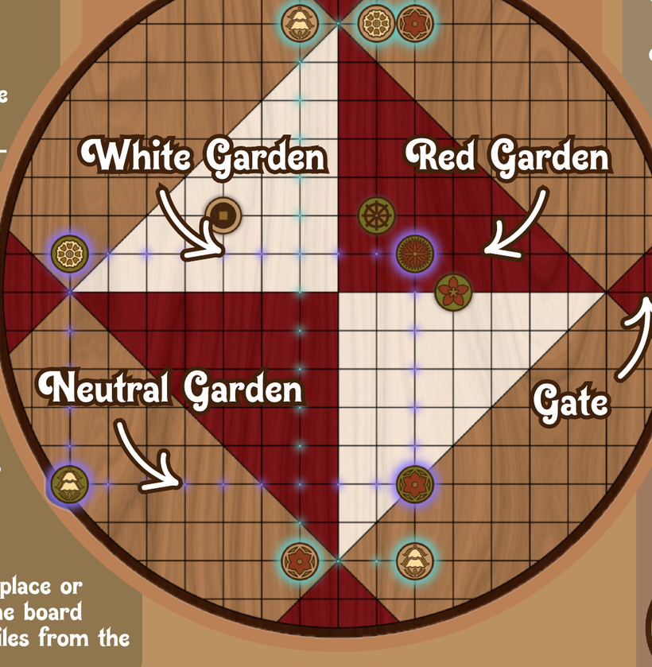
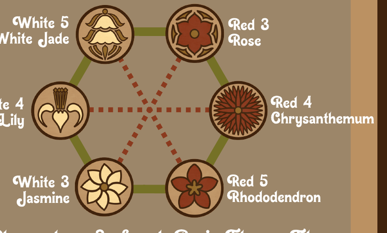

Skud Pai Sho
Link your flower tiles into harmonies and race to close a ring around the center of the board.
Objective
Be the first player to use your flowers to create a Harmony Ring — a closed loop of harmonies that surrounds the center of the board.
Every turn is a choice between growing your garden and arranging the flowers already in bloom, always with an eye toward completing that ring before your opponent completes theirs.

Playing a Turn
On your turn you take exactly one of two actions:
- Arrange — move a Flower Tile already on the board.
- Plant — place a new Basic Flower Tile on an open Gate.
If you form a new Harmony between any of your tiles when you Arrange, you earn a Harmony Bonus and may immediately do one of the following:
- Place an Accent Tile on the board.
- Plant a Special Flower Tile.
- If you have no Growing Flowers, plant a Basic Flower Tile.

Harmonies & Clashes
A Harmony is created when two of a player's harmonious Flower Tiles sit on the same line with no other tiles or Gates between them, and neither tile is on a Gate.
A Clash is when two clashing Flower Tiles — belonging to either player — would line up the same way. Tiles on the board are never allowed to Clash, so you cannot make a move that would result in any Clash.
The Board
Tiles are played on the intersections of the board.
Gates
There are four Gates. Flower Tiles are placed here when first played onto the board. Tiles already on the board can never be moved onto a Gate.
Gardens
The differently colored areas affect where Basic Flower Tiles can move (see Basic Flower Tiles). The border points between Gardens are considered Neutral, and any Basic Flower can be moved there.
Blooming & Growing
Flower Tiles are called Growing while they sit in a Gate, and Blooming once they are anywhere else on the board.
Basic Flower Tiles
Players have three of each Basic Flower Tile. They…
- Move through empty spaces up to as many spaces as the number in their name.
- Form Harmony with the tiles adjacent to them in the flower circle.
- Clash with opposite-colored, same-numbered tiles.
- Capture Clashing tiles by landing on them, removing the captured tile from the game.
- Cannot end their turn completely inside an opposite-colored Garden.


Accent Tiles
Players choose four Accent Tiles to use during the game. Accent Tiles cannot:
- Be played on a Gate.
- Be played in a way that moves a Basic Flower Tile into an opposite-colored Garden.
- Cause tiles to Clash.
- Move a tile onto or off of a Gate or the board.


Special Flowers
Players have one of each Special Flower Tile.


Game Setup
Before the first move:
- Players each choose four Accent Tiles to play with, starting with the Host (the second player).
- The Guest (the first player) chooses a Basic Flower Tile. Each player starts with one of these tiles in opposite Gates.
Ending the Game
The game ends when a player forms their Harmony Ring and wins.
The game also ends when a player plays their last Basic Flower Tile. When this happens, the player with the most midline-crossing Harmonies on the board wins.